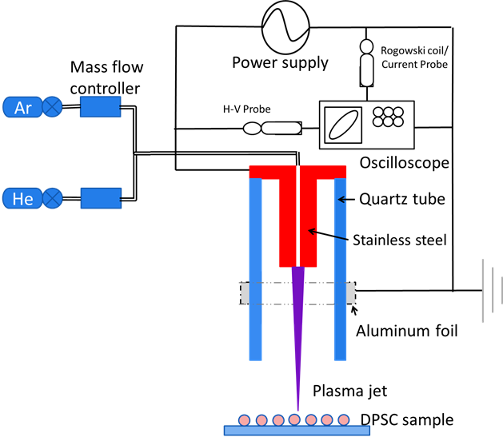

電漿輔助癌症治療與幹細胞分化
Plasma for cancer therapy and stem cell differentiation
背景
低溫常壓電漿系統(APPJ)因其可攜性、成分可調節、人體傷害小、應用範圍廣和穿透深度等優點而成為極具潛力之新療法。 最新研究顯示電漿可誘發幹細胞增生，而幹細胞能應用於組織器官之修復再生，是全世界組織再生研究者致力發展的目標與未來生醫研究重要趨勢。 本研究跨領域整合電漿工程與生醫幹細胞研究，可望為相關疾病如癌症、糖尿病、齲齒等病人提供更有效之組織再生療法。 APPJ 廣泛應用於各種生醫領域如殺菌、誘發癌細胞凋亡等，在牙科治療上亦深具潛力。有別於傳統液體藥劑，氣態電漿能穿透深入牙髓腔與孔洞狀組織進行治療。目前深部齲齒治療過程中，尚無可靠方法維持牙髓活性，同時確定牙髓不被細菌感染，APPJ 可望解決此問題。除了殺菌，研究顯示電漿產生之含氧/氮自由基可影響幹細胞內外基質，刺激生長因子生成，進而引發牙齒幹細胞分化，促進組織再生。
目的
本研究將APPJ產生之氧/氮官能基應用於牙髓幹細胞生長分化，並分析其影響下幹細胞基因與蛋白質變化，進而確認氧/氮自由基對細胞內相關生長因子變化之影響，最終幫助 牙科治療中的牙髓神經再生，研究成果可望從根本改變牙科傳統之根管療程，發展出電漿系統之嶄新生醫應用。 本合作中，醫學團隊已成功將牙髓幹細胞轉分化為唾腺細胞，工程團隊也已建立可攜式APPJ 和蛋白質分析設備。
方法
將氦氣、氬氣或其他氣體混合電離，產生具有各種自由基之APPJ，並噴至預先分離培養的人體牙髓幹細胞樣本上。 其中氧/氮官能基以傅立葉轉換紅外光譜(FTIR)、放光光譜儀(OES)及UV 吸收光譜法進行分析定量，電漿處理後之牙髓幹細胞經由活性、菌落、自然凋亡等測試以確認最佳電漿處理方式。 在觀察到細胞數量變化後，再分析確認細胞之生長因子表現與數量變化，未來也期望能進一步進行動物與人體實驗。
